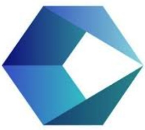

Senior Software Engineer with 20+ years of experience delivering scalable, secure, and highly reliable cloud-native solutions. Specialized in Site Reliability Engineering, Observability, Automation, and Cloud Engineering.

AWS, Azure, Google Cloud Platform
Dynatrace, Splunk, FullStory, Firebase, Google Monitoring
StatusPage, Moogsoft, Google Alert, Splunk, SentinalOne
Terraform, Ansible, Jenkins, Kubernetes
Java, JavaScript, Python, SQL
Selenium, Appium, Playwright, Cucumber, TestNG, JUnit
MySQL, Oracle, SQL Server, MongoDB, DB2, Spanner
Tableau, Power BI, Looker Studio
Passionate Site Reliability Engineer and Senior Cloud Engineer Senior with 20+ years of experience designing and delivering scalable, secure, and highly reliable cloud-native solutions on Google Cloud Platform (GCP). I specialize in Site Reliability Engineering (SRE) and Test Automation, with a strong track record of translating complex business requirements into well-architected systems that drive measurable reliability, performance, and operational excellence.
I lead observability and reliability initiatives, establishing SLIs, SLOs, and error budgets, and driving maturity across logging, metrics, tracing, dashboards, and actionable alerting. I design and implement automation to reduce operational toil, improve system resilience, and increase engineering efficiency—leveraging CI/CD pipelines, Infrastructure-as-Code, automated remediation, and chaos engineering. I actively champion shift-left reliability, embedding resilience and operational best practices early in the development lifecycle.
My background also includes deep expertise in Web, Mobile, and API test automation and manual testing, using tools such as Appium, Selenium (Java), TestNG, JUnit, Cucumber, Allure, Jenkins, Maven, and Git. I excel in test strategy, framework design, estimation, and execution, as well as blameless postmortems, root-cause analysis, and cross-functional collaboration. I enjoy working with stakeholders to define efficient, scalable, and cost-effective technical solutions that enable teams to deliver high-quality software with confidence.